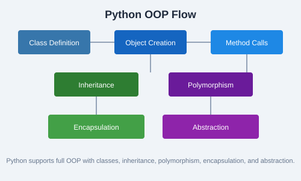

The socket module provides low-level networking interfaces. Sockets are endpoints for sending and receiving data across a network.
import socket
server = socket.socket(socket.AF_INET, socket.SOCK_STREAM)
server.bind(("127.0.0.1", 8080))
server.listen(5)
print("Server listening on port 8080...")
while True:
client, addr = server.accept()
print(f"Connected by {addr}")
client.send(b"Hello from server!")
client.close()import socket
client = socket.socket(socket.AF_INET, socket.SOCK_STREAM)
client.connect(("127.0.0.1", 8080))
data = client.recv(1024)
print(f"Received: {data.decode()}")
client.close()from urllib.request import urlopen
with urlopen("https://api.github.com") as response:
data = response.read()
print(response.status)
print(data[:200])The requests library simplifies HTTP requests significantly compared to the built-in urllib.
import requests
# GET request
response = requests.get("https://api.github.com/users/python")
print(response.status_code)
print(response.json()["login"])
# POST request with JSON
payload = {"title": "Hello", "body": "World"}
r = requests.post("https://jsonplaceholder.typicode.com/posts", json=payload)
print(r.status_code, r.json())response = requests.get("https://httpbin.org/get", params={"key": "value"})
print(response.text) # Raw text
print(response.json()) # Parsed JSON
print(response.headers) # Response headers
print(response.elapsed) # Request durationrequests.ConnectionError, Timeout, and HTTPError.
import requests
from requests.exceptions import RequestException
try:
r = requests.get("https://example.com", timeout=5)
r.raise_for_status()
except RequestException as e:
print(f"Request failed: {e}")with requests.Session() as session:
session.headers.update({"Authorization": "Bearer token123"})
r1 = session.get("https://api.example.com/user")
r2 = session.get("https://api.example.com/posts")timeout parameter in all requests to prevent your program from hanging indefinitely.